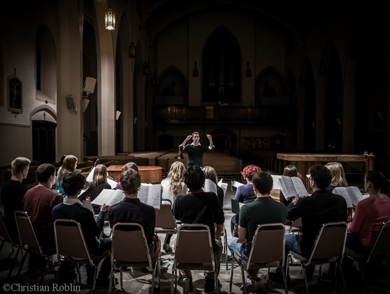

The Capital Chamber Choir is a 24-voice auditioned ensemble in Ottawa, Ontario. The choir was formed in 2009 to provide a new outlet in the National Capital Region for Canadian choral music, as well as Ottawa-based musicians and composers.
The ensemble has become well-known on the Ottawa choral scene for its energy, versatility, and high-quality performances. Since its inaugural year, the ensemble has been committed to showcasing a wide range of Canadian choral music, performing works by Timothy Corlis, Eleanor Daley, John Estacio, Steven Gellman, Srul Irving Glick, Frederic Lacroix, Jocelyn Morlock, Donald Patriquin, Nicholas Piper, Imant Raminsh, R. Murray Schafer, Mark Sirett, Nancy Telfer, and Healey Willan, among others. Although the choir’s programmes are composed predominantly of Canadian repertoire, they also feature international works.
